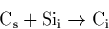

This has led to many unusual postulates to explain experimental data,
for example that there are two types of dimer complex, `normal' and
`O2*' which can eject Sii atoms[266]. However these
assumptions are flawed. It is known that CiOn defects (the
`P-line' complexes) form in the first 15 minutes of
annealing[197] at 450 C, showing the presence of either
Ci or Sii to produce Ci via the mechanism given above.
However these are at extremely low concentrations, and indeed, act as
evidence that Sii concentrations are low as a consequence.
C, showing the presence of either
Ci or Sii to produce Ci via the mechanism given above.
However these are at extremely low concentrations, and indeed, act as
evidence that Sii concentrations are low as a consequence.
In addition, as described above it is not possible as far as we are aware to construct a single Sii structure that does not possess gap states, and so thermal donor models based around a core Sii are unable to explain the electrically inactive forms of the TDs. Carbon suppression of thermal donors can occur through other mechanisms, primarily Cs absorption of Oi and O2i[267], and possibly also a self-catalysed Ci suppression mechanism (described briefly in Section 9.3.1).
Long time annealing FTIR studies[239] show absorption
at 999 cm-1 associated with the thermal donors. However after
long times this disappears and is replaced with broad absorptions at
1012, 1006, and finally 1015 cm-1, believed to be associated with
the shallow thermal donors. This would be consistent with a picture
whereby over long times the thermal donors transform into quartz,
releasing large quantities of Sii. These are then able to
initially transform all available Cs into Ci, leading to a glut
of Ci-based STD formation (CHO4 complexes). Thereafter the
remaining Sii combine to form  311
311 rod-like precipitates.
rod-like precipitates.
This therefore suggests that Sii are not present in large quantities in the early stages of Cz-Si annealing but are formed later when quartz precipitation occurs. In addition they are not involved in the structure of thermal donors[268].